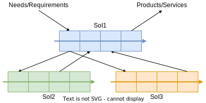
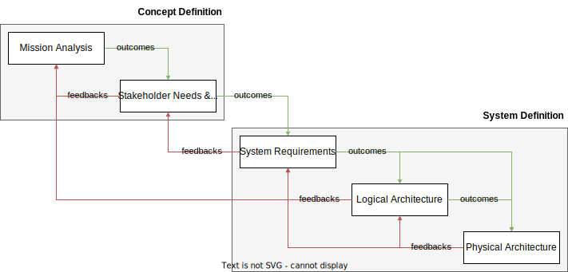
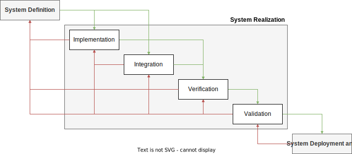
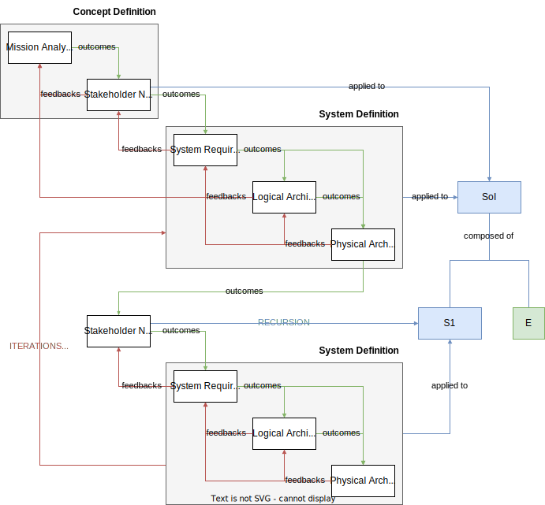
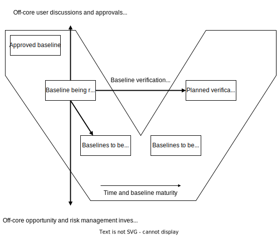
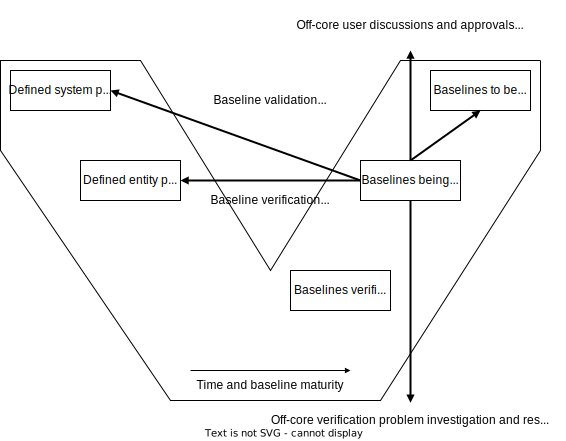
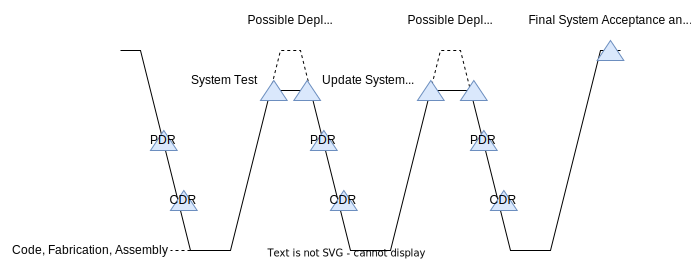
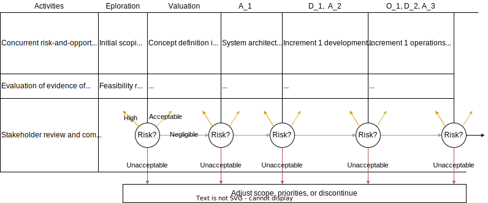
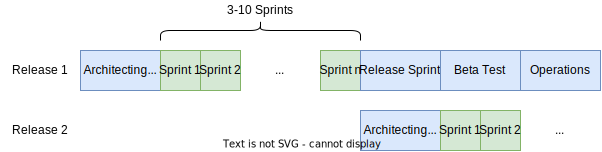

SEBoK#
Notes from Guide to the Systems Engineering Body of Knowledge (SEBok), version 2.9
Part 3: Systems Engineering and Management (SE&M)#
Systems Engineering and Management#
Systems Engineering and Management (SE&M) articles provide system lifecycle best practices for defining and executing interdisciplinary processes to ensure that customer needs are satisfied with a technical performance, schedule, and cost compliant solution.
SE&M Knowledge Areas#
The SE&M articles are organized into the following Knowledge Areas (KAs).
Systems Engineering STEM Overview
Model-Based Systems Engineering (MBSE)
Systems Life Cycle Approaches
System Life Cycle Models
Systems Engineering Management
Business and Mission Analysis
Stakeholder Needs Definition
System Architecture Definition
Detailed Design Definition
System Analysis
System Realization
System Implementation
System Integration
System Verification
System Transition
System Validation
System Operation
System Maintenance
System Specialty Engineering
Logistics
Service Life Management
Systems Engineering Standards
Systems Engineering & Management Overview#
The role of Systems Engineering (SE) is to define system, constraints, allocations, behavior and structure characteristics to satisfy customer needs.
The system is defined in terms of
hierarchical structural elements, and
their behavior interactions.
The interactions include the exchange of data, energy, force, or mass which modifies the state of the cooperating elements resulting in emergent, discrete, or continuous behaviors.
The behaviors are at sequential levels of aggregation (bottoms-up) or decomposition (top-down) to satisfy requirements, constraints, and allocations.
SE collaborates within an integrated product team with electrical, mechanical, software, and specialty engineering to define the subsystem and component detailed design implementations to develop a holistic technical solution.
Model-Based Systems Engineering (MBSE)#
Model-based Systems Engineering (MBSE)
is a paradigm that uses formalized representations of systems, known as models, to support and facilitate the performance of SE tasks throughout a system’s life cycle.
is frequently contrasted with legacy document-based approaches where systems engineering captures system design information via multiple independent documents in various non-standardized formats.
consolidates of system information in system design models, which provide primary SE artifacts.
These system models, which are generally expressed in a standardized modelling language such as Systems Modeling Language (SysML®) express key system information in a concise, consistent, correct, and coherent format.
When implemented properly, MBSE models permit the standardized consolidation and integration of system knowledge across engineering disciplines and subsystems and streamline key systems engineering tasks while also minimizing developmental risk.
System Models#
Definition of a model#
Models
are representations that are used to capture, analyze, and/or communicate information about a system or concept.
can vary in scope, purpose, and type, and can be utilized both individually as stand-alone entities as well as in concert with each other as part of an integrated set.
Model Properties#
A model can be described and classified with respect to the following properties:
Scope
Domain
Formality
Abstraction
Physical/conceptual
Descriptive/analytical
Fidelity
Completeness
Integration
Quality
Criteria for Effective MBSE Models#
While a successful MBSE workflow can involve the use of several different interconnected or standalone models of various scopes and types based on user needs, the main system model in an MBSE projects generally should have the following characteristics:
A scope which matches the scope of the project (i.e., it should encompass the entire SoI);
Representative of a holistic perspective from all relevant domains.
Strict compliance with a previously established standardized modeling language, whether that be an existing language such as SysML® or a custom formalism.
Fully abstracted, to only include relevant information appropriate for the SoI and its desired use-case(s).
Conceptual in nature, to permit the capture of intangible information (e.g., system requirements)
Containing a description of the system functional and structural architecture at minimum and supplemented by integrated analytical/quantitative property descriptions as needed.
Demonstrating sufficient fidelity to capture relevant system elements and behavior.
Fully complete given its scope.
Integrated with any necessary auxiliary models.
Sufficiently high-quality as to meet the needs of those designing, developing, or otherwise working on the system. In terms of content, effective system models are expected to capture key system information regarding requirements, system functionality/behavior, structure/form, properties, and interconnections between system components.
Digital Twins#
When MBSE models of physical systems are built with sufficient completeness and fidelity, it is possible for them to function as “digital twins” of the systems they represent.
Digital twins provide a means of accurately representing a system’s form and function throughout the system’s lifecycle, all within a digital environment.
Creating such digital twins allow
testing, analysis, and optimization of systems in a virtual environment at
no risk to the actual system of interest, and
a greatly reduced cost/burden.
representing the behavior of systems under conditions which would be impractical or impossible to induce under experimental conditions, thereby making it possible to obtain information not obtainable via study of the original physical system.
Knowledge Area: Systems Lifecycle Approaches#
Systems Lifecycle Approaches#
Key principles:
life cycle,
life cycle model, and
life cycle processes.
A generic SE paradigm is described; this forms a starting point for discussions of more detailed life cycle knowledge.
Topics#
This KA contains the following topics:
Generic Life Cycle Model
Applying Life Cycle Processes
Life Cycle Processes and Enterprise Need
Life Cycle Terminology#
The term “life cycle” is used to describe
the complete life of an instance of a system-of-interest (SoI), and
the managed combination of multiple such instances to provide capabilities which deliver stakeholder satisfaction.
A life cycle model:
identifies the major stages that a specific SoI goes through, from its inception to its retirement.
is generally implemented in development projects and are strongly aligned with management planning and decision making.
Generic Systems Engineering Paradigm#
Overall goals of any SE effort:
understanding of stakeholder value,
selection of a specific need to be addressed,
transformation of that need into a system (the product or service that provides for the need), and
use of that product or service to provide the stakeholder value.
SoI’s identified in the formation of a System Breakdown Structure (SBS). SoI 1 is broken down into its basic elements, which in this case are systems as well (SoI 2 and SoI 3). These two systems are composed of system elements that are not refined any further.
Generic Life Cycle Model#
Each SoI has an associated LC model.
The generic LC model below applies to a single SoI.
SE must generally be synchronized across a number of tailored instances of such LC models to fully satisfy stakeholder needs.
|
|---|
System Breakdown Structure |

 |
|---|
SoI LC/Processes |
A Generic System Life Cycle Model#
There is no single “one-size-fits-all” system LC model that can provide specific guidance for all project situations.
The model is defined as a set of stages, within which technical and management activities are performed.
The stages are terminated by decision gates, where the key stakeholders decide whether
to proceed into the next stage,
to remain in the current stage, or
to terminate or re-scope related projects.
Stages:
Definition
Concept Definition
System Definition
System Realization
System Production, Support, and Utilization (PSU)
System Production
System Support
System Utilization
System Retirement
Applying Life Cycle Processes#
The Generic Life Cycle Model describes a set of life cycle stages and their relationships.
In defining this we described some of the technical and management activities critical to the success of each stage.
While this association of activity to stage is important, we must also recognize the through life relationships between these activities to ensure we take a systems approach.
SE technical and management activities are defined in a set of life cycle processes.
These group together closely related activities and allow us to describe the relationships between them.
In this topic, we discuss a number of views on the nature of the inter-relationships between process activities within a life cycle model.
In general, the technical and management activities are applied in accordance with the principles of concurrency, iteration and recursion described in the generic systems engineering paradigm.
These principles overlap to some extent and can be seen as related views of the same fundamental need to ensure we can take a holistic systems approach, while allowing for some structuring and sequence of our activities.
The views presented below should be seen as examples of the ways in which different SE authors present these overlapping ideas.
Life Cycle Process Terminology#
Process#
Is a series of actions or steps taken in order to achieve a particular end, and
Can be performed by humans or machines transforming inputs into outputs.
Are interpreted in several ways, including
technical,
LC,
business, or
manufacturing flow processes.
Requirement#
Are something that are needed/wanted but may not be compulsory in all circumstances,
May refer to product/process characteristics/constraints.
Different understandings of requirements are dependent upon
process state,
level of abstraction,
and type (e.g. functional, performance, constraint).
May have multiple interpretations over time.
Exist at multiple levels of enterprise/systems with multiple levels of abstraction, ranging from
highest level of the enterprise capability/customer need to
lowest level of the system design.
Need to be defined at the appropriate level of detail for the level of the entity to which they apply.
Architecture#
Organizational structure of a system, whereby the system can be defined in different contexts.
Is the art or practice of designing the structures.
Can apply for a system product, enterprise, or service.
Closely related to framework, as they are ways of representing architectures.
Life Cycle Process Concurrency#
In the Generic LC Model, the execution of process activities is not compartmentalized to particular LC stages.
RUP Hump |
The lines on this diagram represent the amount of activity for each process over the generic life cycle. The peaks (or humps) of activity represent the periods when a process activity becomes the main focus of a stage. The activity before and after these peaks may represent through life issues raised by a process focus, e.g. how likely maintenance constraints will be represented in the system requirements. These considerations help maintain a more holistic perspective in each stage, or they can represent forward planning to ensure the resources needed to complete future activities have been included in estimates and plans, e.g. all resources needed for verification are in place or available. Ensuring this hump diagram principle is implemented in a way which is achievable, affordable and appropriate to the situation is a critical driver for all life cycle models.
Life Cycle Process Iteration#
The concept of iteration applies to LC stages within a LC model, and also applies to processes.
 |
|---|
Concept and System Definition processes iterations |
Figure 3 below gives an example of the iteration between the other life cycle processes. The iterations in this example relate to the overlaps in process outcomes shown in Figure 1. They either allow consideration of cross process issues to influence the system definition (e.g. considering likely integration or verification approaches might make us think about failure modes or add data collection or monitoring elements into the system) or they allow risk management and through life planning activities to identify the need for future activities.
 |
|---|
Concept and System Definition processes iterations — System realization |
Life Cycle Process Recursion#
The comprehensive definition of a SoI is generally achieved using decomposition layers and system elements.
Figure 4 presents a fundamental schema of a SBS. The comprehensive definition of a SoI is generally achieved using decomposition layers and system elements. In each decomposition layer and for each system, the System Definition processes are applied recursively because the notion of “system” is in itself recursive; the notions of SoI, system, and system element are based on the same concepts (see Part 2).
 |
|---|
Concept and System Definition processes iterations — Recursion |
Systems Approach to Solution Synthesis#
Top-Down Approach: From Problem to Solution#
In a top-down approach, concept definition activities
are focused primarily on understanding
the problem,
the operational needs/requirements within the problem space, and
the conditions that constrain the solution and bound the solution space.
determine
the mission context,
the mission analysis, and
te needs to be fulfilled in that context by a new or modified system (i.e. the SoI), and
address stakeholder needs and requirements.
consider functional, behavioral, temporal, and physical aspects of one or more solutions based on the results of concept definition.
System analysis:
considers the advantages and disadvantages of the proposed system solutions both in terms of
how they satisfy the needs established in concept definition, as well as
the relative cost, time scales and other development issues.
requires further refinement of the concept definition to ensure all legacy relationships and stakeholders relevant to a particular solution architecture have been considered in the stakeholder requirements.
The outcomes of this iteration between Concept Definition and System Definition define
a required system solution and
its associated problem context, which are used for
System Realization,
System Deployment and Use, and
Product and Service Life Management of one or more solution implementations.
In this approach, problem understanding and solution selection activities are
completed in the front-end portion of system development and design and then
maintained and refined as necessary throughout the LC of any resulting solution systems.
Depending upon the LC model, top-down activities can be
sequential,
iterative,
recursive, or
evolutionary.
Bottom-Up Approach: Evolution of the Solution#
In some situations, the concept definition activities
determine the need to evolve existing capabilities or
add new capabilities to an existing system.
During the concept definition, the alternatives to address the needs are evaluated.
Engineers are then led to reconsider the system definition in order to modify or adapt some structural, functional, behavioral, or temporal properties during the product or service life cycle for a changing context of use or for the purpose of improving existing solutions.
Reverse engineering is often necessary to
enable system engineers to (re)characterize the properties of the system-of-interest (SoI) or its elements.
ensure that system engineers understand the SoI before beginning modification.
A bottom-up approach is necessary for
analysis purposes, or
(re)using existing elements in the design architecture.
Changes in the context of use or a need for improvement can prompt this. In contrast, a top-down approach is generally used to define an initial design solution corresponding to a problem or a set of needs.
Solution Synthesis#
In most real problems, a combination of bottom-up and top-down approaches provides the right mixture of innovative solution thinking driven by need, and constrained and pragmatic thinking driven by what already exists.
This is often referred to as a “middle-out” approach.
As well as being the most pragmatic approach, synthesis has the potential to
keep the life cycle focused on whole system issues, and
allow the exploration of the focused levels of detail needed to describe realizable solutions.
Knowledge Area: System Life Cycle Models#
Categories of Life Cycle Model#
Categories of potential LC process models:
Pre-specified
single-step
multi-step
Evolutionary
sequential
opportunistic
concurrent
Interpersonal and emergent
The emergence of integrated, interactive hardware-software systems made pre-specified processes potentially harmful, as the most effective human-system interfaces tended to emerge with its use. This led to the introduction of more lean approaches to concurrent hardware-software-human factors approaches such as:
concurrent vee models, and
Incremental Commitment Spiral Model.
System Lifecycle Process Drivers and Choices#
LC processes:
impacted by many organizational factors,
impact all other aspects of system design and development.
Fixed-Requirements and Evolutionary Development Processes#
Aside from the traditional, pre-specified, sequential, single-step development process (identified as Fixed Requirements), there are several models of evolutionary development processes; however, there is no one-size-fits-all approach that is best for all situations.
For rapid-fielding situations, an easiest-first, prototyping approach may be most appropriate. For enduring systems, an easiest-first approach may produce an unscalable system, in which the architecture is incapable of achieving high levels of performance, safety, or security.
In general, system evolution now requires
much higher sustained levels of SE effort,
earlier and continuous integration and testing,
proactive approaches to address sources of system change,
greater levels of concurrent engineering, and
achievement reviews based on evidence of feasibility versus plans and system descriptions.
Evolutionary development processes or methods have been in use since the 1960s (and perhaps earlier).
They allow a project to provide an initial capability followed by successive deliveries to reach the desired SoI.
This practice is particularly valuable in cases in which
rapid exploration and implementation of part of the system is desired,
requirements are unclear from the beginning, or are rapidly changing,
funding is constrained,
the customer wishes to hold the SoI open to the possibility of inserting new technology when it becomes mature, and
experimentation is required to develop successive versions.
In evolutionary development a capability of the product is developed in an increment of time. Each cycle of the increment subsumes the system elements of the previous increment and adds new capabilities to the evolving product to create an expanded version of the product in development. This evolutionary development process, that uses increments, can provide a number of advantages, including:
continuous integration, verification, and validation of the evolving product,
frequent demonstrations of progress,
early detection of defects,
early warning of process problems, and
systematic incorporation of the inevitable rework that may occur.
Primary Models of Incremental and Evolutionary Development#
|
|---|
Primary models of incremental and evolutionary development |

Type |
Subtype |
Pros |
Cons |
Examples |
|---|---|---|---|---|
Pre-specified |
Single-step |
Efficient |
Difficulties with rapid change |
Simple manufactured products |
Multi-step |
Early initial capability |
Emergent requirements or rapid change |
Vehicle platform plus value-adding pre-planned product improvements (PPPIs) |
|
Evolutionary |
Sequential |
Adaptability to change |
Easiest-first |
Small: Agile |
Opportunistic |
Mature technology upgrades |
Emergent requirements or rapid change |
Stable development |
|
Concurrent |
Emergent requirements or rapid change |
Overkill on small or highly stable systems |
Rapid, emergent development |
Incremental and Evolutionary Development Decision Table#
Type |
Subtype |
Stable, pre-specific |
Ok to wait for full system |
Need to wait for |
Need to wait for |
|---|---|---|---|---|---|
Pre-specified |
Single-step |
True |
True |
||
Multi-step |
True |
False |
|||
Evolutionary |
Sequential |
False |
False |
True |
|
Opportunistic |
False |
False |
False |
True |
|
Concurrent |
False |
False |
False |
False |
Evolutionary Sequential SLC Model: Vee#
 |
|---|
Left Side of the Sequential Vee Model |
|
|---|
Stages, Purposes, and Major Decision Gates |

|
|---|
Vee Activity Diagram |

 |
|---|
Right Side of the Sequential Vee Model |
Evolutionary Incremental SLC Models#
Evolutionary Approach#
 |
|---|
Evolutionary Approach |
Incremental Approach#
Evolutionary Concurrent LC Model: Incremental Commitment Spiral#
Each spiral addresses requirements and solutions concurrently, rather than sequentially, as well as
products and processes,
hardware,
software,
human factors aspects, and
business case analyses of alternative product configurations/product line investments.
Stakeholders
consider the risks and risk mitigation plans, and
decide on a course of action.
If the risks are acceptable and covered by risk mitigation plans, the project proceeds into the next spiral.
The development spirals after the first development commitment review follow the three-team incremental development approach for achieving both agility and assurance.
 |
|---|
Phased View of the Generic Incremental Commitment Spiral Model Process |
Agile and Lean Processes#
Agile development methods can be used to support iterative LC models, allowing flexibility over a linear process that better aligns with the planned LC for a system.
Lean processes are often associated with agile methods, although they are more scalable and applicable to high-assurance systems.
Scrum#
Architected Agile Methods#
Over the last decade, several organizations have been able to scale up agile methods by using two layers of ten-person Scrum teams.
This involves, among other things, having each Scrum team’s daily meeting followed up by a daily meeting of the Scrum team leaders discussing up-front investments in evolving system architecture (Boehm et al. 2010).
 |
|---|
Architected Agile Process |
System Life Cycle Process Models: Agile Systems Engineering#
A system LC starts at the concept definition phase, moves through stages until completion of this system, as defined in the concept definition stage.
A model representation of the LC may be
physical,
data, or
graphic.
The process describes the steps to accomplish each stage of the LC including input to and output from this stage.
Today’s complex and increasingly highly connected systems face rapid obsolescence under the stress of technological change, environmental change, and rapidly evolving mission needs. For these systems to remain robust against disruption they must be architected to agilely adapt. To meet these needs, the system must be assessed to apply the process that best serves the system, subsystem or component of the SoI.
It is important to determine the best LC to use for the SoI early in the concept definition phase.
On a program that is going to operate agilely, especially if it will be a hybrid model with agile, and other LC models it is important to define and harmonize them at key integration points based on
hardware or
other long-lead item maturity.
In the Agile SE process, the systems engineer works in an iterative, incremental manner, continually modeling, analyzing, developing, and trading options to bring the definition of the system solution into focus.
An example of this work will be analyzing and maintaining
the requirements,
the architectural model of the higher-level requirements, and
linkage from those high-level requirements to the analyzed lower-level requirements.
the interfaces are defined and followed as the development progresses
Frameworks#
The Agile SE process steps that are performed in each of the stages often include:
Define the highest priority and/or highest risk item while keeping design options open.
Design the solutions to meet those requirements, develop their products, perform tests, and demonstrate that product.
For large products in development where multiple teams integrate their work items together to show a demonstratable product, several iterations may be needed to get to that point.
Prior to starting an increment, all teams working to produce demonstrable products, should meet to plan their work, identify dependencies between the teams and establish commitments to meet the plan.
Release product to stakeholders and plan the next increment of work.
This Agile SE Framework aligns with the Scaled Agile Framework (SAFe) depiction of
teams working program and
team backlogs using iterative development.
SAFe
is a framework that implements the principles of iterative development,
represents how a large system may have multiple LC processes being followed in parallel over time
key decision points need to be aligned between the multiple LC processes.
There are many agile approaches that a program could use as is or combined to adapt to what works best for a given domain.
For a complex system with changing requirements the assessment may result in the decision to use an incremental, iterative approach for development.
Regardless of which model or framework is selected a program starts with a vision, a budget and usually a period of performance. Then the program’s stakeholders identify the highest value capability to develop first The list of capabilities is prioritized so that the long-term development is visible. However, this prioritized order may change as work progresses. What is known about the intended product may have well defined requirements and architecture representations and what is conceptual will have those requirements and designs developed incrementally as time progresses.
This incremental method of development is enabled by the use of
an open system architecture,
MBSE tools,
Set-based design,
design thinking,
continuous integration,
continuous development,
architecture patterns,
microservice architecture, and
Lean sengineering.
Knowledge Area: Systems Engineering Management#
Systems Engineering Management#
Discussion#
Single
SE
Needs and Opportunities Analysis
Operational Concept Development
System Scoping and Requiremens Definition
Architecture Definition
Trade-off Analysis, Modeling, and Simulation
P/SM
Staffing, Organizing, Directing
Cost, Schedule, Performance, Risk Monitoring and Control
Operations Planning and Presentation
Operations Management
SI
Production Line Preparation
Production
Production Control
Testing
Double
SE + P/SM
Business Case Analysis
Systems Engineering Management
SE + SI
Production Planning and Analysis
System Integration
P/SM + SI
Supply Chain Management
Systems Implementation Management
Triple
SE + SI + P/SM
Life Cycle Planning and Estimating
Change Analysis and Management
Q&A, V&V, Continuous Process Improvement
Knowledge Area: Systems Engineering and Industrial Engineering#
Systems Engineering#
A transdisciplinary and integrative approach to enable the successful realization, use, and retirement of engineered systems, using systems principles and concepts, and scientific, technological, and management methods.
Industrial Engineering#
Venn Diagram Comparison#
SE
Business/Mission Analysis
Stakeholder Needs & Requirements
System Requirements
System Architecture (Logical and Physical)
Systems Design and Engineering
Systems Analysis
Implementation
Systems Integration
Systems Verification
Systems Validation
System Operation
IE
Work Design Measurement
Engineering Economics
Facilities Engineering & Management
Operations Engineering & Management
Supply Chain Management
Safety
Design & Manufacturing Engineering
SE + IE
OR & Analysis
Quality & Reliability Engineering
Ergonomics & Human Factors
Engineering Management
Information Engineering
Product Design & Development
Systems Deployment
Updates, Upgrades, Modernization
Service Life Extension
System Maintenance
Logistics
Disposal & Retirement
Roles in a System Life Cycle#
Stage |
Stage |
Role |
Process |
|---|---|---|---|
1 |
Establish System Need |
SE |
|
2 |
Design and Develop |
DE |
Design |
3 |
Produce System |
IE |
Supply Chain Management |
4 |
Deploy System |
IE |
Transportation |
5 |
Operate System |
SE |
Reliability Growth |
6 |
Retire System |
IE/SE |
Knowledge Area: Systems Engineering and Project Management#
Relationships between Systems Engineering and Project Management#
Overlap#
There is a great deal of significant overlap between the scope of SE and other resources and the scope of PM.
These sources describe the importance of
understanding the scope of the work at hand,
how to plan for critical activities,
how to manage efforts while reducing risk, and
how to successfully deliver value to a customer.
The SE working on a project will plan, monitor, confront risk, and deliver the technical aspects of the project, while the PM is concerned with the same kinds of activities for the overall project.
Defining Roles and Responsibilities#
Regardless of how the roles are divided up on a given project, the best way to reduce confusion is to explicitly describe the roles and responsibilities of the PM and the SE, as well as other key team members.
The Project Management Plan (PMP) and the Systems Engineering Management Plan (SEMP) are key documents used to define the processes and methodologies the project will employ to build and deliver a product or service.
The PMP
is the master planning document for the project,
describes all activities, including technical activities, to be integrated and controlled during the life of the program.
The SEMP
is the master planning document for the systems engineering technical elements
defines SE processes and methodologies used on the project and the relationship of SE activities to other project activities
must be consistent with and evolve in concert with the PMP
integrate technical management plans and expectations with customer plans and activities.
The Influence of Project Structure and Governance on Systems Engineering and Project Management Relationships#
An Overview of Project Structures#
PM and SE governance are dependent on the organization’s structure.
For some projects, SE is subordinated to PM and in other cases, PM provides support to SE.
Projects
exist within the structural model of an organization.
are one-time, transient events that are
initiated to accomplish a specific purpose and
terminated when the project objectives are achieved.
Project size:
On small projects, the same person accomplishes the work activities of both PM and SE. Because the natures of the work activities are significantly different, it is sometimes more effective to have two persons performing PM and SE, each on a part-time basis.
On larger projects there are typically too many tasks to be accomplished for one person to accomplish all of the necessary work.
On very large projects, PM and SE offices with a designated project manager and a designated lead systems engineer
Projects are typically organized in one of three ways:
by functional structure,
by project structure, and
by a matrix structure.
In a function-structured organization, workers are grouped by the functions they perform. The systems engineering functions can be:
distributed among some of the functional organizations,
centralized within one organization, or
a hybrid, with some of the functions being distributed to the projects, some centralized and some distributed to functional organization.
Organizational Continuum |
Schedule-Driven versus Requirements-Driven Influences on Structure and Governance#
This article addresses the influences on governance relationships between the project manager and the systems engineer.
One factor that establishes this relationship is whether a project is schedule-driven or requirements-driven.
In general,
a project manager is responsible for delivering an acceptable product/service on the specified delivery date and within the constraints of the specified schedule, budget, resources, and technology.
the systems engineer is responsible for
collecting and defining the operational requirements,
specifying the systems requirements,
developing the system design,
coordinating component development teams,
integrating the system components as they become available,
verifying that the system to be delivered is correct, complete and consistent to its technical specification, and
validating the operation of the system in its intended environment.
From a governance perspective,
the project manager is often thought of as being a movie producer who is responsible for balancing the schedule, budget, and resource constraints to meet customer satisfaction
the systems engineer is responsible for product content; ergo, the systems engineer is analogous to a movie director.
Organizational structures, discussed previously, provide the project manager and systems engineer with different levels of governance authority.
In addition, schedule and requirements constraints can influence governance relationships.
A schedule-driven project
is one for which meeting the project schedule is more important than satisfying all of the project requirements; in these cases lower priority requirements may not be implemented in order to meet the schedule.
examples:
a project that has an external customer with a contractual delivery date and an escalating late delivery penalty, and
a project for which delivery of the system must meet a major milestone (e.g. a project for an announced product release of a cell phone that is driven by market considerations).
For schedule-driven projects,
the project manager is responsible for planning and coordinating the work activities and resources for the project so that the team can accomplish the work in a coordinated manner to meet the schedule.
the systems engineer works with the project manager to determine the technical approach that will meet the schedule.
An Integrated Master Schedule (IMS) is often used to coordinate the project.
Examples:
exploratory development of a new system that is needed to mitigate a potential threat (e.g. military research project) and
projects that must conform to government regulations in order for the delivered system to be safely operated (e.g., aviation and medical device regulations).
An Integrated Master Plan is often used to coordinate event-driven projects.
To satisfy the product requirements, the systems engineer is responsible for making technical decisions and making the appropriate technical trades. When the trade space includes cost, schedule, or resources, the systems engineer interacts with the project manager who is responsible for providing the resources and facilities needed to implement a system that satisfies the technical requirements. Management structure:
Schedule-driven projects are more likely to have a management structure in which the project manager plays the central role
Requirement-driven projects are more likely to have a management structure in which the systems engineer plays the central role